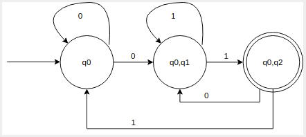
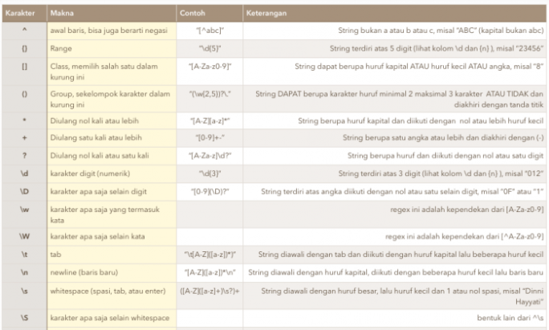
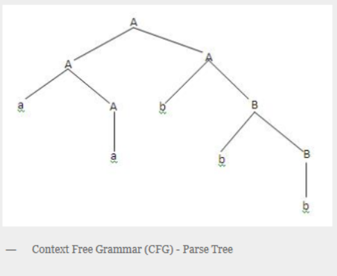
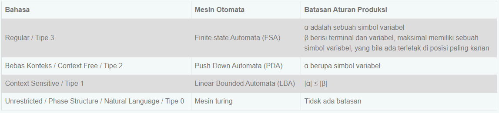
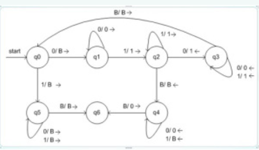

Teori Automata adalah studi tentang perangkat komputasi abstrak, atau \ mesin. "Sebelum ada komputer, pada tahun 1930-an, A. Turing mempelajari mesin abstrak yang memiliki semua kemampuan komputer saat ini, setidaknya sejauh yang mereka miliki. dapat menghitung. Tujuan Turing adalah untuk mendeskripsikan secara tepat batas antara apa yang dapat dilakukan mesin komputasi dan apa yang tidak dapat dilakukannya. Kesimpulannya berlaku tidak hanya untuk mesin Turing abstraknya, tetapi juga untuk mesin nyata saat ini. Subjek ini akan kita pelajari tentang karakteristik kelas tata bahasa, membuat tata bahasa yang termasuk dalam kelas tata bahasa regular, bebas konteks dan sensitif konteks, serta membuat mesin hipotetik.
Tata bahasa adalah model yang berguna saat merancang perangkat lunak yang memproses data dengan struktur rekursif. Contoh paling terkenal adalah \ parser, "komponen kompilator yang menangani fitur bertingkat rekursif dari bahasa pemrograman tipikal, seperti ekspresi | aritmatika, bersyarat, dan seterusnya.
Ekspresi Reguler juga menunjukkan struktur data, terutama string teks. Seperti yang akan kita lihat di Bab 3, pola string yang mereka gambarkan persis sama dengan yang bisa dijelaskan oleh nite automata. Gaya ekspresi ini berbeda secara signifikan dari gaya tata bahasa.
VENDING MACHINE A vending machine can sell goods to customers without an operator to operate the machine. However, in Indonesia,the presence of vending machines are rarely seen. In this study, the author will try to learn about how a vending machine works, as well as to apply part of the Language and Automata Theory to design and create a simulation of a vending machine. As the result of the design and implementation of Finite Automata in vending machine simulation, it can be concluded that Finite Automata can be used for basic logic to make a vending machine simulation. Through this application simulation, user can get an experience in operating a vending machine and learn how to use the vending machine.
Notasi O Besar atau bisa disebut dengan Big O Notation merupakan sebuah metode dalam menganalisa waktu eksekusi pada algoritma pemrograman. Notasi Big O juga mengamati berapa banyak operasi dalam algoritma untuk dieksekusi. Dan juga, Notasi Big O merupakan bagian dari Kompleksitas Algoritma.
Notasi Big O menghitung sebagaimana efisien dan kompleksitas sebuah barisan kode dalam dimensi waktu.
Notasi Big O dapat digunakan dalam menggambarkan kesalahan aproksimasi dalam fungsi matematika.
O(n) (Linear) Mencari sebuah harga terendah dan tertinggi. Dan juga hanya 1 kali pengulangan. Jumlah operasi 2n.
O(n2) (Quadratic) Sebuah pengulangan dalam pengulangan. Dan di komparasi dalam seluruh harga. Jumlah operasi n^2.
O(1) (Constant) Asumsi diurut berdasarkan harga, hanya tinggal mencari elemen pertama dan elemen terakhir. jumlah operasi 2.
Buat semua state yang merupakan subset dari state semula. Jumlah state menjadi 2Q.
Telusuri transisi state-state yang baru terbentuk, dari diagram transisi.
Tentukan state awal : {q0}
Tentukan state akhir adalah state yang elemennya mengandung state akhir.
Reduksi state yang tak tercapai oleh state awal.
Sehingga dapat dibuat tabel transisi untuk NFA seperti dibawah:
| 0 | 1 | |
|---|---|---|
| q0 | q0,q1 | q0 |
| q1 | - | q2 |
| q2 | - | - |
1. Buat semua state yang merupakan subset dari state semula. Jumlah state menjadi 2Q.
| 0 | 1 | |
|---|---|---|
| q0 | q0,q1 | q0 |
| q1 | - | q2 |
| *q2 | - | - |
| q0,q1 | - | - |
| q0,q2 | - | - |
| q1,q2 | - | - |
| q0,q1,q2 | - | - |
2. Telusuri transisi state-state yang baru terbentuk, dari diagram transisi.
| 0 | 1 | |
|---|---|---|
| q0 | q0,q1 | q0 |
| q1 | - | q2 |
| *q2 | - | - |
| q0,q1 | q0,q1 | q0,q2 |
| q0,q2 | q0,q1 | q0 |
| q1,q2 | - | q2 |
| q0,q1,q2 | q0,q1 | q0,q2 |
3. Tentukan state awal : {q0}
| 0 | 1 | |
|---|---|---|
| ->q0 | q0,q1 | q0 |
| q1 | - | q2 |
| *q2 | - | - |
| q0,q1 | q0,q1 | q0,q2 |
| q0,q2 | q0,q1 | q0 |
| q1,q2 | - | q2 |
| q0,q1,q2 | q0,q1 | q0,q2 |
4. Tentukan state akhir adalah state yang elemennya mengandung state akhir.
| 0 | 1 | |
|---|---|---|
| ->q0 | q0,q1 | q0 |
| q1 | - | q2 |
| *q2 | - | - |
| q0,q1 | q0,q1 | q0,q2 |
| *q0,q2 | q0,q1 | q0 |
| *q1,q2 | - | q2 |
| *q0,q1,q2 | q0,q1 | q0,q2 |
5. Reduksi state yang tak tercapai oleh state awal.
| 0 | 1 | |
|---|---|---|
| ->q0 | q0,q1 | q0 |
| q0,q1 | q0,1 | q0,q2 |
| *q0,q2 | q0,q1 | q0 |
Berdasarkan Langkah-Langkah diatas diperoleh hasil sebagai berikut:
Regex adalah singkatan dari Regular Expresion. Regex merupakan sebuah teks (string) yang mendefinisikan sebuah pola pencarian sehingga dapat membantu kita untuk melakukan matching (pencocokan), locate (pencarian), dan manipulasi teks. Konsep tentang regex pertamakali muncul di tahun 1951, ketika seorang ilmuan matematikan bernama Stephen Cole Kleene memformulasikan definisi tentang bahasa formal.
Contoh expresi regular:
• (0+1)* : himpunan seluruh string yang dapat dibentuk dari
simbol ‘0’ dan ‘1’
• (0+1)*00(0+1)* : himpunan string biner yang mengandung paling
sedikit satu substring ‘00’
• (0+1)*00 : himpunan string biner yang diakhiri dengan ‘00’
1. Regex untuk Mesin Pencari
Nah, menggunakan ekspresi
reguler untuk menemukan konten di web dianggap sebagai grail
suci pencarian. Tetapi web adalah binatang buas dan mendukung
mesin regex yang lengkap akan terlalu menuntut untuk server
Google. Ini menghabiskan banyak sumber daya komputasi. Oleh
karena itu, tidak ada yang benar- benar menyediakan mesin
telusur yang mengizinkan semua perintah regex.
Namun, mesin pencari web seperti Google mendukung sejumlah
perintah regex. Misalnya, Anda dapat menelusuri kueri yang TIDAK
berisi kata tertentu: Penelusuran "Teori Bahasa" akan memberi
Anda semua hasil Teori yang tidak berakhir dengan kata Bahasa.
Jika nama depan didominasi seperti ini, menggunakan operator
penelusuran lanjutan merupakan ekstensi yang cukup berguna.
Dengan ledakan data dan pengetahuan, menguasai pencarian adalah
keterampilan penting di abad ke-21.
2. Regex dalam Teori Bahasa Formal Ilmu komputer teoretis adalah
dasar dari semua ilmu komputer. Nama-nama besar dalam ilmu
komputer, Alan Turing, Gereja Alonzo, dan Steven Kleene,
semuanya menghabiskan waktu dan upaya yang signifikan untuk
mempelajari dan mengembangkan ekspresi reguler. Jika Anda ingin
menjadi ilmuwan komputer yang hebat, Anda perlu mengetahui
bagian yang adil dari ilmu komputer teoretis. Anda perlu tahu
tentang teori bahasa formal. Anda perlu mengetahui tentang
ekspresi reguler yang merupakan inti dari fondasi teoretis ini.
Bagaimana ekspresi reguler berhubungan dengan teori bahasa
formal? Setiap ekspresi reguler menentukan "bahasa" dari
kata-kata yang dapat diterima. Semua kata yang cocok dengan
ekspresi reguler ada dalam bahasa ini. Semua kata yang tidak
cocok dengan ekspresi reguler tidak ada dalam bahasa ini. Dengan
cara ini, Anda dapat membuat kumpulan aturan yang tepat untuk
mendeskripsikan bahasa formal apa pun — hanya dengan menggunakan
kekuatan ekspresi reguler.
3. Regex untuk Validasi input Contoh penggunaan regex untuk
validasi input adalah sebagai berikut. Anggap kita menginginkan
input yang dimasukkan user terbatas pada karakter + ( ) - dan
numerik serta spasi untuk input nomor telepon. (tanda tambah
untuk memasukkan nomor telepon luar negeri). Dalam Java, kita
bisa menggunakan kode sebagai berikut. String regex =
“[/+/(/)/-0-9s]*”; if (inputUser.matches(regex)) return true; //
atau save input, atau jalankan proses, atau print “input valid”.

4. Regex untuk Bahasa pemrograman Ya, Anda telah mempelajari
tentang parser pada poin sebelumnya. Dan pengurai diperlukan
untuk bahasa pemrograman apa pun. Terus terang: tidak ada bahasa
pemrograman di dunia yang tidak bergantung pada ekspresi reguler
untuk implementasinya sendiri. Tetapi masih ada lagi: ekspresi
reguler juga sangat populer saat menulis kode dalam bahasa
pemrograman apa pun. Beberapa bahasa pemrograman seperti Perl
menyediakan fungsionalitas regex bawaan: Anda bahkan tidak perlu
mengimpor pustaka eksternal. Saya jamin, jika Anda menjadi
pembuat kode profesional, Anda akan menggunakan ekspresi reguler
dalam banyak proyek pengkodean. Dan semakin sering Anda
menggunakannya, semakin Anda akan belajar untuk mencintai dan
menghargai kekuatan ekspresi reguler.
CFG atau Context Free Grammar adalah tata bahasa yang mempunyai
tujuan sama seperti halnya tata bahasa regular yaitu merupakan
suatu cara untuk menunjukkan bagaimana menghasilkan suatu
untai-untai dalam sebuah bahasa.CFG perlu disederhankan dengan
tujuan untuk melakukan pembatasan sehingga tidak menghasilkan
pohon penurunan yang memiliki kerumitan yang tak perlu atau
aturan produksi tak berarti.
Context Free Grammar (CFG)/ Bahasa Bebas Konteks adalah sebuah
tata bahasa dimana tidak terdapat pembatasan pada hasil
produksinya, Contoh Pada aturan produksi :
α → β
batasannya hanyalah ruas kiri (α) adalah sebuah simbol variabel.
Sedangkan contoh aturan produksi yang termasuk CFG adalah
seperti di bawah :
B → CDeFg D → BcDe
Ada berbagai kemampuan CFG:
1. Tata bahasa bebas konteks berguna untuk mendeskripsikan
sebagian besar bahasa pemrograman.
2. Jika tata bahasa dirancang dengan benar maka pengurai yang
efisien dapat dibangun secara otomatis.
3. Dengan menggunakan fitur informasi asosiatif & prioritas,
tata bahasa yang sesuai untuk ekspresi dapat dibangun.
4. Tata bahasa bebas konteks mampu mendeskripsikan struktur
bertingkat seperti: tanda kurung seimbang, pencocokan
awal-akhir, sesuai jika-maka-lain & seterusnya.
Context Free Grammar ( CFG ) menjadi dasar dalam pembentukan
suatu parser/proses analisis sintaksis. Bagian sintaks dalam
suatu kompilator kebanyakan di definisikan dalam tata bahasa
bebas konteks. Pohon penurunan ( derivation tree/parse tree)
berguna untuk menggambarkan simbol-simbol variabel menjadi
simbol-simbol terminal setiap simbol variabel akan di turunkan
menjadi terminal sampai tidak ada yang belum tergantikan.
Contoh, terdapat CFG dengan aturan produksi sebagai berikut
dengan simbol awal S :
S → AB
A → aA | a
B → bB | b
Maka jika ingin dicari gambar pohon penurunan dengan
string : ‘aabbb’ hasilnya adalah seperti di bawah.
Proses penurunan / parsing bisa dilakukan dengan cara sebagai
berikut : Penurunan terkiri (leftmost derivation): simbol
variabel terkiri yang di perluas terlebih dahulu. Penurunan
terkanan ( rightmost derivation ) simbol variabel terkanan yang
diperluas terlebih dahulu.
Misal : Grammar sbb :
S → aAS | a
A → SbA | ba
Untuk memperoleh string ‘aabbaa’ dari grammar diatas dilakukan
dengan cara :
Penurunan terkiri: S => aAS => aSbAS => aabAS => aabbaS =>
aabbaa
Penurunan terkanan : S => aAS => aAa => aSbAa => aAbbaa =>
aabbaa

Ambiguitas terjadi bila terdapat lebih dari satu pohon penurunan
yang berbeda untuk memperoleh suatu string. Misalkan terdapat
tata bahasa sebagai berikut :
S → A | B
A → a B → a
Untuk memperoleh untai ‘a’ bisa terdapat dua cara penurunan
sebagai berikut :
S => A => a
S => B => a
Contoh ambiguitas lain: Diketahui grammar G = {S → SOS|A , O →
*|+, A → 0|1|2|…|9} String : 2*3+7 mempunyai dua pohon sintaks
berikut : Sebuah string yang mempunyai lebih dari satu pohon
sintaks disebut string ambigu (ambiguous). Grammar yang
menghasilkan paling sedikit sebuah string ambigu disebut grammar
ambigu.
.png)
Hierarki Chomsky merupakan tata Bahasa (Grammar) bisa didefinisikan secara formal sebagai kumpulan dari himpunan - himpunan variable, simbol-simbol terminal, simbol awal, yang dibatasi oleh aturan - aturan produksi. Pada tahun 1959 seorang ahli bernama Noam Chomsky melakukan pengelompokkan tingkatan bahasa menjadi empat, yang disebut dengan Hirarki Chomsky.
Noam Chomsky mengelompokkan bahasa menjadi 4 (empat) tingkatan.
Yaitu, bahasa unrestricted / Natural, bahasa Context Sensitive,
bahasa bebas konteks (Context Free), dan bahasa regular.
Penggolongan tersebut bisa dilihat dari tabel dibawah ini :

Tabel diatas merupakan keterangan mengenai setiap bahasa, mulai
dari bahasa tipe 3 sampai kepada bahasa tipe 0. Berikut ini akan
dijelaskan dengan lengkap mengenai masingmasing bahasa mulai
dari tipe 3 sampai tipe 0 , contoh, mesin otomatanya, serta
aplikasi-aplikasi yang mungkin dari masing-masing mesin otomata
ini.
Dalam hirarki chomsky, terdapat empat level bahasa yaitu level 0 (Natural Language), level 1 (Contex sensitive), level 2 (Bebas Konteks), dan level 3 (Regular). Dari setiap leveltersebut terdapat aturan-aturan produksi yang membatasinya. Contoh-contoh aturan produksi untuk setiap level bahasa :
Bahasa manusia termasuk kedalam tipe ini, dimana tidak ada
batasan untuk aturan produksinya. Contoh :
a. Abc →aa
b. Bc → aBaB
c. CaB → aaBaaBa
Panjang string di ruas kiri (α ) ≤ panjang string ruas kanan
(β). Contoh :
a. Ab → aBa
b. cD → aB
c. dEd → FabCa
α adalah sebuah simbol variabel, dan batasannya bertambah bahwa
ruas kiri harus tetap satu simbol variabel. Contoh :
a. A → aa
b. B → aBD
c. C → FGaa
Batasannya bertambah lagi, dimana ruas kanan maksimal memiliki
sebuah simbol variabel yang terletak paling kanan. Artinya bisa
memiliki simbol terminal dengan jumlah tidak dibatasi, tetapi
bila terdapat simbol variabel maka simbol variabel tersebut
hanya berjumlah satu (1) dan terletak paling kanan. Contoh :
a. A → aa
b. B → aaB
c. C → aaaaa
Mesin turing adalah suatu model yang sangat sederhana dari komputer. Konsep mesin turing pertama kali di kenalkan oleh Alan Turing pada tahun 1936 dalam papernya yang berjudul “On Computable Numbers, with an Application to the Entscheidungsproblem” .Konsep mesin turing inilah yang menjadi dasar dari teori komputabilitas.Mesin modern dapat digunakan untuk berbagai permasalahan matematis yang sederhana. Contoh perhitungan pada bilangan bulat, mengoreksi simbol, menghitung suatu fungsi bilangan bulat dan lain-lain. Makalah ini akan didesign suatu mesinturing yang akan menerima bahasa palindrome. Palindromeadalah suatu kata, kalimat yang jika dibaca dari depan ke belakang atau sebaliknya akan sama hasilnya. Akan dibuktikan juga bahwa jika suatu masalah dapat didukung oleh mesin turing satu pita maka dapat pula menerapkannya dengan mesin turing banyak pita.
Pada PDA (Push Down Otomata) digunakan stack untuk menyimpan dan mengakses data inputan. Tetapi hal ini menyebabkan kemampuan kerja PDA yang terbatas karena pada prinsip stack,hanya data teratas yang bisa diakses. Ini menyebabkan keterbatasan PDA. Mesin turing menggunakan pita (tape) sebagai memori yang berbentuk array . Hal ini menyebabkan data pada pita dapat diakses dari mana saja.
1. Mesin turing memiliki pita berupa array sebagai memori yang
dapat menyimpan sebuah simbol tunggal
2. Mesin turing memiliki head sebagai penunjuk posisi yang
sedang diakses pada pita
3. Head dapat bergerak kekanan/kekiri pada pita sesuai fungsi
transisi yang ditetapkan untuk membaca inputan
4. Head juga dapat melakukan penulisan/ mengubah isi pita
1. Lihat state semula dan simbol yang ditunjuk head
2. Berdasarkan fungsi transisinya,tentukan:
- State berikutnya
- Lakukan penulisan ke pita
- Gerakkan head ke kanan dan ke kiri
3. Bila dari pasangan state dan simbol yang ditunjuk head tidak
ada lagi fungsi transisinya,berarti mesin turing berhenti
4. Bila mesin turing berhenti di dalam state final (F) , berarti
input diterima. Sebaliknya jika mesin berhenti tidak pada state
akhir,maka berarti inputan tersebut ditolak.
Mesin turing didefinisikan sebagai 7 tuple M={ Q, S, G, S, F, Ь,
∆}
Q: himpunan hingga state,
S: alfabet input,
G: simbol pada pita (meliputi pula blank)
S: state awal, S Î Q
Ь: simbol kosong (blank) (bukan bagian dari S )
∆: fungsi transisi
F: state akhir, F Î Q
Sebuah contoh mesin Turing dapat dibangun untuk melakukan
komputasi sederhana yang didefinsikan seperti ini:
Tentukan ada berapa angka 1 dalam sebuah string berbentuk
0111...110 (rangkaian angka 1 yang didahului dengan 0 dan
diakhiri juga dengan 0), apakah berjumlah genap atau berjumlah
ganjil.
Jika angka 1 di antara dua angka 0 berjumlah genap, tulis sebuah
angka 0 pada salah satu sel dari tape mesin Turing.
Jika angka 1 di antara dua angka 0 berjumlah ganjil, tulis
sebuah angka 1 pada salah satu sel dari tape mesin Turing.
Untuk menyelesaikan masalah komputasi ini, kita buat tiga buah
State bagi mesin Turing ini, yaitu Start, Even, dan Odd. Di
samping itu kita buat sekumpulan aturan Transisi yang digunakan
oleh mesin Turing ini untuk melakukan proses komputasinya.
Aturan-aturan Transisi tersebut dapat dituliskan demikian:
1. Jika mesin Turing berada pada status Start, dan membaca
simbol 0 pada Tape, lakukan hal berikut: Pindah status menjadi
status Even, Ganti simbol 0 pada Tape dengan Blank (atau Hapus
simbol 0 pada Tape), dan Bergerak ke kanan satu sel.
2. Jika mesin Turing berada pada status Even, dan membaca simbol
1 pada Tape, lakukan hal berikut: Pindah status menjadi status
Odd, Ganti simbol 1 pada Tape dengan Blank, dan Bergerak ke
kanan satu sel.
3. Jika mesin Turing berada pada status Odd, dan membaca simbol
1 pada Tape, lakukan hal berikut: Pindah status menjadi Even,
Ganti simbol 1 pada Tape dengan Blank, dan Bergerak ke kanan
satu sel.
4. Jika mesin Turing berada pada status Even, dan membaca simbol
0 pada Tape, lakukan hal berikut: Pindah status menjadi Halt,
Ganti simbol 0 pada Tape dengan 0, dan tetap pada sel tersebut
(tidak perlu berpindah ke kiri maupun ke kanan).
5. Jika mesin Turing berada pada status Odd, dan membaca simbol
0 pada Tape, lakukan hal berikut: Pindah status menjadi Halt,
Ganti simbol 0 pada Tape dengan 1, dan tetap pada sel tersebut.
Mesin Turing berikut menghitungan fungsi , yang dinamakan monus
atau proper substraction.
Fungsi ini didefinisikan oleh m n = max(m – n, 0). Bahwa, m n =
m – n jika m ³ n dan 0 jika m < n.
Mesin Turing yang melakukan operasi ini adalah :
M=({q0, q1, … , q6}, {0, 1}, {0, 1, B}, d, q0, B)
Aturan untuk fungsi transisi d:

Diagram transisi dari mesin Turing M :
